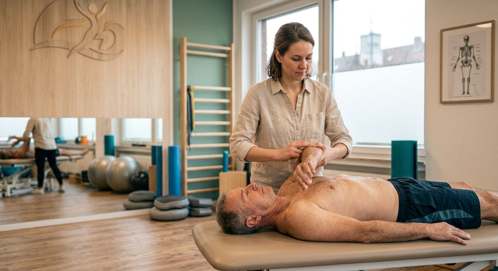
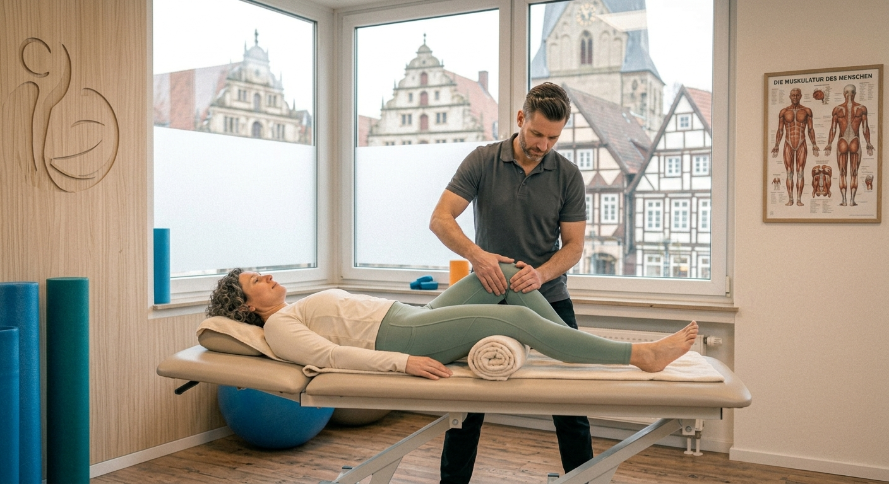

Physiotherapie in Herford
Physiotherapie, die sich
nach Ihnen richtet.
Beschwerden behandeln, Beweglichkeit zurückgewinnen und wieder sicher im Alltag werden – mit einem festen Team und ausreichend Zeit für Ihre Behandlung.
Bäckerstraße 12, 32052 Herford

Alle Kassen & PrivatKassenzulassung, Privat, Beihilfe
Familiengeführte PraxisFamilie Brandt und ihr Team
Auch ohne RezeptAls Selbstzahler direkt zu uns
Ebenerdig & zentralKeine Stufen, Parkplätze im Hof
Behandlungen
Bewegung zurückgewinnen.
Schmerzen verstehen.
Ob nach einer Verletzung, einer Operation oder länger anhaltenden Beschwerden: Wir schauen uns gemeinsam an, wo das Problem liegt und was Ihnen im Alltag wirklich hilft.
- Rücken- und Nackenbeschwerden
- Gelenk- und Muskelbeschwerden
- Nach Operationen und Verletzungen
- Sportverletzungen
- Lymphdrainage
- Krankengymnastik
Nicht das Richtige dabei? Fragen Sie einfach an – wir sagen Ihnen, ob wir helfen können.
Unser Ansatz
Nicht jede Behandlung
muss gleich aussehen.
Rückenschmerzen sind nicht gleich Rückenschmerzen, und keine Schulter reagiert wie die andere. Deshalb hören wir erstmal zu und schauen genau hin, bevor wir behandeln.
Manchmal braucht es Manuelle Therapie, manchmal eher gezieltes Training, oft beides. Wir sagen Ihnen ehrlich, was wir sehen – und was als Nächstes sinnvoll ist.
Die Praxis
Zeit für Ihre Behandlung.
Bei uns geht es nicht darum, möglichst viele Termine hintereinander abzuarbeiten. Wir möchten, dass Sie wissen, wer Sie behandelt und was wir gemeinsam erreichen wollen.
Deshalb erklären wir jeden Schritt und hören zu, wenn etwas nicht passt. Der Behandlungsplan richtet sich nach Ihrem Alltag – nicht umgekehrt.
-
Ulrike Brandt
Praxisleitung · Manuelle Therapie
Physiotherapeutin seit 1998, hat die Praxis 2005 mit aufgemacht. Schwerpunkt Wirbelsäule und Kiefergelenk (CMD).
-
Stefan Brandt
Lymphdrainage · Atemtherapie
Der zweite Gründer. Behandelt am liebsten nach Operationen, erklärt dabei jeden Handgriff und macht am Ende immer noch fünf Minuten länger.
-
Lena Brandt
Sportphysiotherapie · Athletiktraining
Die Tochter, seit 2019 dabei. Betreut nebenher die Handballer der Landesliga und weiß deshalb ziemlich genau, wann man wieder belasten darf – und wann eben nicht.
Und danach?
Was Sie selbst tun können, ist genauso wichtig.
Eine Behandlung kann einen wichtigen Impuls geben. Dauerhafte Veränderung entsteht aber meistens zwischen den Terminen.
Deshalb zeigen wir Ihnen Übungen und Bewegungen, die Sie auch zu Hause durchführen können – zum Beispiel gezielte Mobilisation bei Rückenschmerzen oder Kräftigungsübungen nach einer Verletzung. Was für Sie sinnvoll ist, besprechen wir direkt im Termin und passen es an, wenn sich etwas ändert.
Lymphdrainage
Sanfte Behandlung,
gezielt eingesetzt.
Bei Schwellungen oder Lymphabflussstörungen kann eine manuelle Lymphdrainage dabei helfen, Flüssigkeit im Gewebe abzutransportieren und Beschwerden zu lindern.
Häufig eingesetzt wird die Lymphdrainage nach Operationen, bei Lipödem oder bei Schwellungen durch eingeschränkten Lymphabfluss. Die Behandlung ist sehr sanft – Sie liegen entspannt, während wir gezielt am betroffenen Bereich arbeiten.
Wir erklären Ihnen den Ablauf vor der ersten Behandlung und stimmen die Therapie auf Ihre Situation ab.

Termin buchen
Termin direkt online buchen
Wählen Sie unten einen freien Termin im Kalender. Sie erhalten sofort eine Bestätigung per E-Mail – ganz ohne Rückruf.
Standort
So finden Sie zu uns
Bäckerstraße 12, ebenerdig, drei Minuten vom Alten Markt. Parkplätze gibt es im Innenhof.
Adresse
Nordlight PhysiotherapieBäckerstraße 12
32052 Herford
Öffnungszeiten
| Montag | 07:30 – 19:00 |
|---|---|
| Dienstag | 07:30 – 19:00 |
| Mittwoch | 07:30 – 15:00 |
| Donnerstag | 07:30 – 19:00 |
| Freitag | 07:30 – 14:00 |
| Samstag | nach Vereinbarung |
| Sonntag | geschlossen |